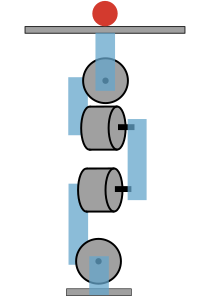

Marble Game - Assignment 1
Deadline: 7th November 2023 - 23:59
Introduction
The goal of this assignment is to demonstrate your ability to control the position and orientation of the hip of your leg.
You will demonstrate the control using a marble game.
Challenge 1: Open-Loop Control of the Two-Dimensional Marble Game
In this challenge, we will first demonstrate the ability to control the movement of the hip.
After constructing your leg assembly, add a two dimensional maze at the hip of your robot. The size of the maze should be 11cm by 15cm. The goal is to roll a golf or table tennis ball from the Start position to the Goal position.
The walls of your maze should be about 1cm tall. For a greater challenge, you can lower the height of the walls, especially the external walls. Then you have to carefully control the speed of the ball, since it will otherwise jump out of the maze.
 | |
Possible leg assembly with the maze attached | Two dimensional marble maze |
Servo Control
First implement a program on the Raspberry PI to demonstrate control of the four RC servos.
Identify the maximum angles and home positions of your servos.
Make sure that you keep your leg assembly light, so that you can move the hip given the RC servos.
Remote Control
Implement an application on the Raspberry PI to control the leg that you constructed.
Your application should be able to:
-
change the angles of each of the four servos
-
control the position and orientation of the hip of your leg
You can use a combination of keyboard, mouse, touchscreen, or joystick to control your leg.
Use manual control to move the ball from the Start position to the Goal position.
Challenge 2: Closed Loop Control of the One-Dimensional Marble Game
In this part of the challenge, we will simplify the maze to a single rail, which runs from the front to the back of your maze.
|
A maze with a single rail for experiments in feedback control. |

Camera Feedback
Mount the camera of the Raspberry PI so that you can watch your leg assembly and the ball.
Implement a program for the camera. I suggest a simple blob/color detector to estimate the position of the ball and angle of the hip of your leg.
PID Control
Implement and tune a PID controller to try and balance the ball on the track, so that it holds its position near the center of the playing field.
CMACs
Using feedback from the camera, implement the time inversion algorithm of CMACs to try and control the ball on the rail.
Challenge 3: Closed Loop Control of the Two-Dimensional Marble Game
In the third challenge, we extend our work to control the ball to balance on a plane in two dimensions.
The maze is empty inside. The Start is at the top left and the goal is center of the playing field.
|
A maze with a single rail for experiments in feedback control. |

Camera
Modify your camera setup and vision application to estimate the position on the top of the plane.
PID Control
Add and tune an additional PID controller so that you can balance on the plane.
CMACs
Extend your CMAC controller to balance the ball on the maze.